<!DOCTYPE html>
<html lang="en">
  <head>
    <meta charset="utf-8" />
    <meta name="viewport" content="width=device-width, initial-scale=1.0, maximum-scale=1.0, user-scalable=no" />

    <title>w11-7AAVDM52-complexity</title>
    <link rel="stylesheet" href="dist/reveal.css" />
    <link rel="stylesheet" href="dist/theme/black.css" id="theme" />
    <link rel="stylesheet" href="plugin/highlight/zenburn.css" />
	<link rel="stylesheet" href="css/layout.css" />
	<link rel="stylesheet" href="plugin/customcontrols/style.css">
	<link rel="stylesheet" href="plugin/chalkboard/style.css">

	<link rel="stylesheet" href="plugin/reveal-pointer/pointer.css" />


    <script defer src="dist/fontawesome/all.min.js"></script>

	<script type="text/javascript">
		var forgetPop = true;
		function onPopState(event) {
			if(forgetPop){
				forgetPop = false;
			} else {
				parent.postMessage(event.target.location.href, "app://obsidian.md");
			}
        }
		window.onpopstate = onPopState;
		window.onmessage = event => {
			if(event.data == "reload"){
				window.document.location.reload();
			}
			forgetPop = true;
		}

		function fitElements(){
			const itemsToFit = document.getElementsByClassName('fitText');
			for (const item in itemsToFit) {
				if (Object.hasOwnProperty.call(itemsToFit, item)) {
					var element = itemsToFit[item];
					fitElement(element,1, 1000);
					element.classList.remove('fitText');
				}
			}
		}

		function fitElement(element, start, end){

			let size = (end + start) / 2;
			element.style.fontSize = `${size}px`;

			if(Math.abs(start - end) < 1){
				while(element.scrollHeight > element.offsetHeight){
					size--;
					element.style.fontSize = `${size}px`;
				}
				return;
			}

			if(element.scrollHeight > element.offsetHeight){
				fitElement(element, start, size);
			} else {
				fitElement(element, size, end);
			}		
		}


		document.onreadystatechange = () => {
			fitElements();
			if (document.readyState === 'complete') {
				if (window.location.href.indexOf("?export") != -1){
					parent.postMessage(event.target.location.href, "app://obsidian.md");
				}
				if (window.location.href.indexOf("print-pdf") != -1){
					let stateCheck = setInterval(() => {
						clearInterval(stateCheck);
						window.print();
					}, 250);
				}
			}
	};


        </script>
  </head>
  <body>
    <div class="reveal">
      <div class="slides"><section  data-markdown><script type="text/template"><!-- .slide: class="drop" -->
<div class="" style="position: absolute; left: 0px; top: 0px; height: 1199px; width: 1920px; min-height: 1199px; display: flex; flex-direction: column; align-items: center; justify-content: center" absolute="true">

# Visualising complexity and uncertainty
## Data Visualisation ― week 11


[Dr Daniel Chávez Heras](https://movingpixel.net/)

[7AAVDM52](https://keats.kcl.ac.uk/course/view.php?id=108839)

2023-24
</div>

<aside class="notes"><p>This final session we explore the notion of visualising complexity and uncertainty. By exploring simulation techniques that overlap with scientific inquiry, such as agent-based simulation and cellular automata, we consider visualisation as a way of creating contingent, self-reflecting, or self-actualising systems. We will discuss theoretical aspects such as in Conway’s game of life, and practical examples of agent-based simulation using the Mesa library and framework for Python.</p>
</aside></script></section><section  data-markdown><script type="text/template"><!-- .slide: class="has-dark-background drop" data-background-color="#2b1804" -->
<div class="" style="position: absolute; left: 0px; top: 0px; height: 1199px; width: 1920px; min-height: 1199px; display: flex; flex-direction: column; align-items: center; justify-content: center" absolute="true">

# The road ahead

<div class="callout callout-color8">
<div class="callout-title">
<div class="callout-icon">

<i class="fas fa-list" ></i>


</div>
<div class="callout-title-inner">

In today's lecture:  

</div>
</div>
<div class="callout-content">

1. From data to model

2. From rules to system

3. Examples: cellular automata

4. Questions

5. Looking back and looking forward

</div>
</div>
</div></script></section><section  data-markdown><script type="text/template"><!-- .slide: class="has-dark-background drop" data-background-color="#304f5e" -->
<div class="" style="position: absolute; left: 0px; top: 0px; height: 1199px; width: 1920px; min-height: 1199px; display: flex; flex-direction: column; align-items: center; justify-content: center" absolute="true">

# 1. From data to model

<i class="fas fa-microchip fa-4x" ></i>


<i class=""></i>
</div></script></section><section  data-markdown><script type="text/template"><!-- .slide: class="drop" -->
<div class="" style="position: absolute; left: 0px; top: 0px; height: 1199px; width: 1920px; min-height: 1199px; display: flex; flex-direction: column; align-items: center; justify-content: center" absolute="true">

## Where does data come from?
## What is <mark>beneath</mark> data?
</div>

<aside class="notes"><p>data-driven documents, data-driven decision making, data visualisation</p>
</aside></script></section><section  data-markdown><script type="text/template"><!-- .slide: class="drop" -->
<div class="" style="position: absolute; left: 0px; top: 0px; height: 1199px; width: 1920px; min-height: 1199px; display: flex; flex-direction: column; align-items: center; justify-content: center" absolute="true">

## What if phenomena cannot be directly measured?
</div>

<aside class="notes"><p>think of examples: the beginning of life, all the connection in the internet, the folding of proteins.</p>
</aside></script></section><section  data-markdown><script type="text/template"><!-- .slide: class="drop" -->
<div class="" style="position: absolute; left: 0px; top: 0px; height: 1199px; width: 1920px; min-height: 1199px; display: flex; flex-direction: column; align-items: center; justify-content: center" absolute="true">

## We model!
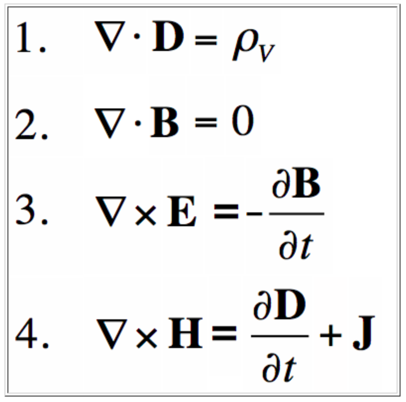
</div></script></section><section  data-markdown><script type="text/template"><!-- .slide: class="has-dark-background drop" data-background-color="#304f5e" -->
<div class="" style="position: absolute; left: 0px; top: 0px; height: 1199px; width: 1920px; min-height: 1199px; display: flex; flex-direction: column; align-items: center; justify-content: center" absolute="true">

# 2. From rules to system

<i class="fas fa-wave-square fa-4x" ></i>
</div>

<aside class="notes"></aside></script></section><section  data-markdown><script type="text/template"><!-- .slide: class="drop" -->
<div class="" style="position: absolute; left: 0px; top: 0px; height: 1199px; width: 1920px; min-height: 1199px; display: flex; flex-direction: column; align-items: center; justify-content: center" absolute="true">

## A random world?

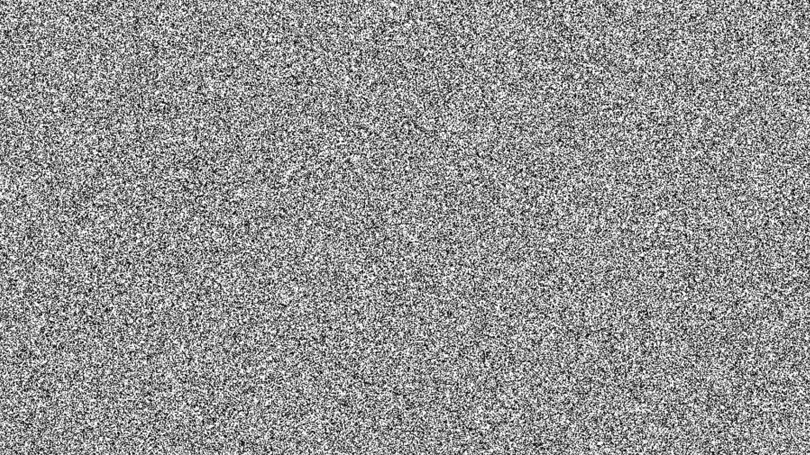
</div>

<aside class="notes"><ul>
<li>random noise</li>
<li>random number distribution</li>
<li>random pixels</li>
</ul>
</aside></script></section><section  data-markdown><script type="text/template"><!-- .slide: class="drop" -->
<div class="" style="position: absolute; left: 0px; top: 0px; height: 1199px; width: 1920px; min-height: 1199px; display: flex; flex-direction: column; align-items: center; justify-content: center" absolute="true">


</div>

<aside class="notes"><p>In his book Genèse the French philosopher Michel Serres develops an idea of the ultimate being-in-itself as noise. Behind the phenomenal world (the world we perceive) is an infinite complexity, an incomprehensible multitude, an analogue to white noise. All concepts, all understanding of the world is an ordering of this chaos,<a href="http://www.ubu.com/papers/noise.html#note_eight">8</a> this multiplicity, &quot;noise.&quot; Serres uses the term &quot;noise&quot; with two meanings: the English (noise) and the old French word &quot;noise,&quot; meaning quarrel. He also hints at the Greek, maritime origin, &quot;nausea&quot; (see above). The multiplicity is conflict-ridden and noisy.<br>Noise and conflict are normally closely related in music as well. This aspect of noise is the reason why it is often used to express anger, fear and violence. Noise in music belongs, of course, to the phenomenal world, but exists at the limits of our senses, pointing metonymically towards a more fundamental noise, the chaos of the pre-phenomenal world. When we are confronted with a massive dose of noise, we often create our own sounds in our heads, &quot;phantomic sounds&quot;, as a desperate way of relating to the audible chaos.<br>There is also, I think, a more sociological perspective to this. In today&#39;s society it is impossible to take in all the information that surrounds us; we are constantly forced to sort out loads of information to be able to find (hear) the desired or relevant information. Information society is verging on noise society, a state in which the information, meant to convey knowledge, ends up losing the ability to speak at all. Our culture becomes taciturn without being silent, moving towards a noisy muteness.</p>
</aside></script></section><section  data-markdown><script type="text/template"><!-- .slide: class="drop" -->
<div class="" style="position: absolute; left: 0px; top: 0px; height: 1199px; width: 1920px; min-height: 1199px; display: flex; flex-direction: column; align-items: center; justify-content: center" absolute="true">

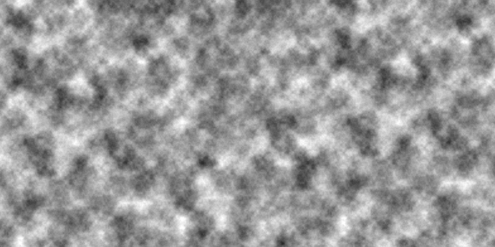

Perlin Noise
</div>

<aside class="notes"><p><strong>Perlin noise</strong>, named for its inventor, Ken Perlin in 1983, takes this concept into account by producing a naturally ordered sequence of pseudorandom numbers, where each number in the sequence is quite close in value to the one before it. This creates a “smooth” transition between the random numbers and a more organic appearance than pure noise, making Perlin noise well suited for generating various effects with natural qualities, such as clouds, landscapes, and patterned textures like marble.
He developed it after working on Disney&#39;s computer animated sci-fi motion picture Tron (1982) for the animation company Mathematical Applications Group (MAGI).[3] In 1997, Perlin was awarded an Academy Award for Technical Achievement for creating the algorithm, the citation for which read</p>
</aside></script></section><section  data-markdown><script type="text/template"><!-- .slide: class="drop" -->
<div class="" style="position: absolute; left: 0px; top: 0px; height: 1199px; width: 1920px; min-height: 1199px; display: flex; flex-direction: column; align-items: center; justify-content: center" absolute="true">

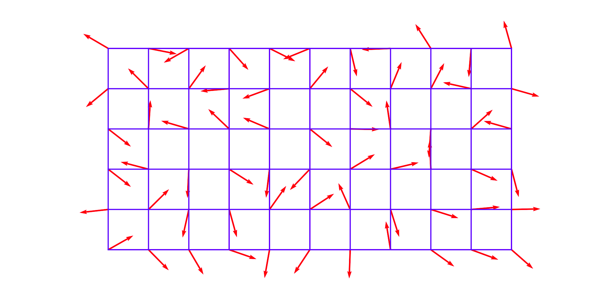

A two-dimensional grid of gradient vectors
</div></script></section><section  data-markdown><script type="text/template"><!-- .slide: class="drop" -->
<div class="" style="position: absolute; left: 0px; top: 0px; height: 1199px; width: 1920px; min-height: 1199px; display: flex; flex-direction: column; align-items: center; justify-content: center" absolute="true">

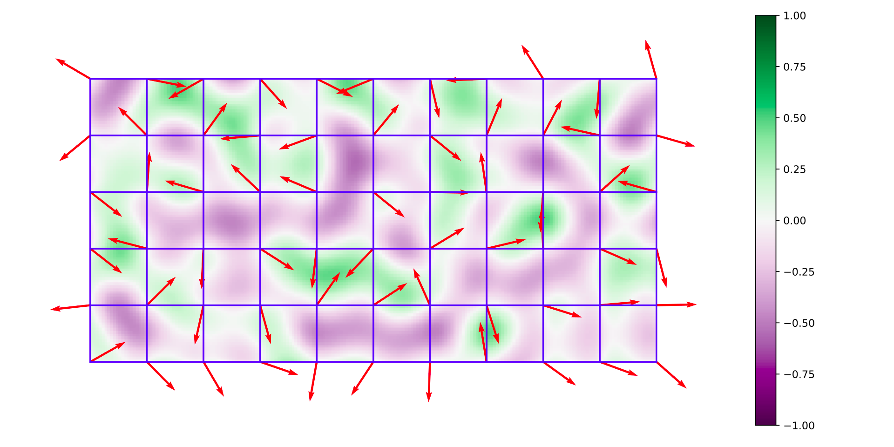

The dot product of each point with its nearest grid node gradient value + interpolation via a function
</div></script></section><section  data-markdown><script type="text/template"><!-- .slide: class="drop" -->
<div class="" style="position: absolute; left: 0px; top: 0px; height: 1199px; width: 1920px; min-height: 1199px; display: flex; flex-direction: column; align-items: center; justify-content: center" absolute="true">

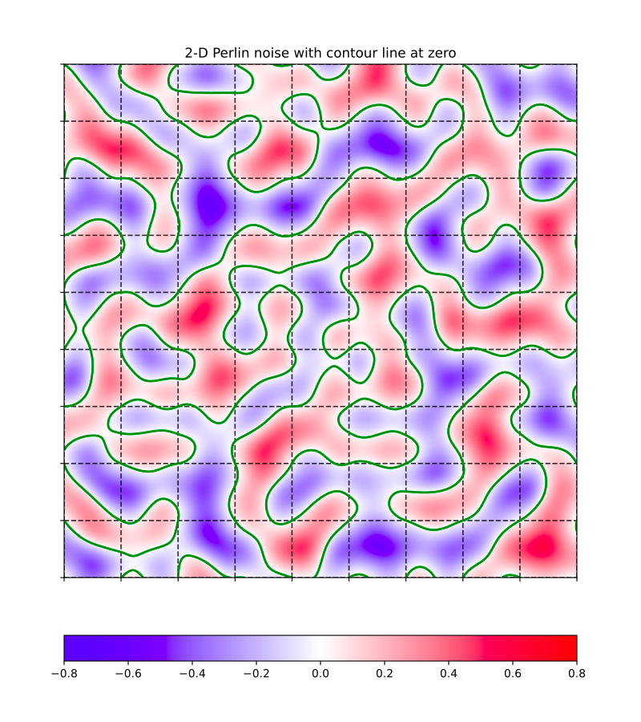
</div></script></section><section  data-markdown><script type="text/template"><!-- .slide: class="drop" -->
<div class="" style="position: absolute; left: 0px; top: 0px; height: 1199px; width: 1920px; min-height: 1199px; display: flex; flex-direction: column; align-items: center; justify-content: center" absolute="true">


An organic surface generated with Perlin noise
</div></script></section><section  data-markdown><script type="text/template"><!-- .slide: class="drop" -->
<div class="" style="position: absolute; left: 0px; top: 0px; height: 1199px; width: 1920px; min-height: 1199px; display: flex; flex-direction: column; align-items: center; justify-content: center" absolute="true">

In 1997, Ken Perlin won an Oscar...

>To Ken Perlin for the development of Perlin Noise, a technique used to produce natural appearing textures on computer generated surfaces for motion picture visual effects. The development of Perlin Noise has allowed computer graphics artists to <mark>better represent the complexity of natural phenomena</mark> in visual effects for the motion picture industry.
</div>

<aside class="notes"><p>Ken Perlin developed Perlin noise in 1983 as a result of his frustration with the &quot;machine-like&quot; look of computer-generated imagery (CGI) at the time.[1] He formally described his findings in a SIGGRAPH paper in 1985 called &quot;An Image Synthesizer&quot;.[2] He developed it after working on Disney&#39;s computer animated sci-fi motion picture Tron (1982) for the animation company Mathematical Applications Group (MAGI).[3] In 1997, Perlin was awarded an Academy Award for Technical Achievement for creating the algorithm, the citation for which read:[4][5][6][7]</p>
</aside></script></section><section  data-markdown><script type="text/template"><!-- .slide: class="drop" -->
<div class="" style="position: absolute; left: 0px; top: 0px; height: 1199px; width: 1920px; min-height: 1199px; display: flex; flex-direction: column; align-items: center; justify-content: center" absolute="true">

## Complex systems

> A system composed of <mark>many components</mark> that interact with each other and exhibits <mark>complex behaviours</mark>
</div></script></section><section  data-markdown><script type="text/template"><!-- .slide: class="drop" -->
<div class="" style="position: absolute; left: 0px; top: 0px; height: 1199px; width: 1920px; min-height: 1199px; display: flex; flex-direction: column; align-items: center; justify-content: center" absolute="true">

## Complex behaviours

- Nonlinearity
- Emergence
- Self-organisation
- Adaptation
- Feedback loops
</div>

<aside class="notes"><p>In mathematics and science, a nonlinear system is a system in which the change of the output is not proportional to the change of the input. Nonlinear problems are of interest to engineers, biologists, physicists, mathematicians, and many other scientists.</p>
<p>In philosophy, systems theory, science, and art, emergence occurs when a complex entity has properties or behaviors that its parts do not have on their own, and emerge only when they interact in a wider whole.</p>
<p>A complex adaptive system is a system that is complex in that it is a dynamic network of interactions, but the behavior of the ensemble may not be predictable according to the behavior of the components. It is adaptive in that the individual and collective behavior mutate and self-organize corresponding to the change-initiating micro-event or collection of events.</p>
<p>Feedback occurs when outputs of a system are routed back as inputs as part of a chain of cause-and-effect that forms a circuit or loop. The system can then be said to feed back into itself.</p>
</aside></script></section><section  data-markdown><script type="text/template"><!-- .slide: class="drop" -->
<div class="" style="position: absolute; left: 0px; top: 0px; height: 1199px; width: 1920px; min-height: 1199px; display: flex; flex-direction: column; align-items: center; justify-content: center" absolute="true">

## The study of complex systems

> An approach to science that investigates how relationships between a system's parts give rise to its collective behaviours and how the system interacts and forms relationships with its environment.

Bar-Yam, Yaneer (2002). "General Features of Complex Systems"
</div>

<aside class="notes"><p>Complex <a href="https://en.wikipedia.org/wiki/System" title="System">systems</a> whose behaviour is intrinsically difficult to model due to the dependencies, competitions, relationships, or other types of interactions between their parts or between a given system and its environment. Examples include:</p>
<ul>
<li>evolution</li>
<li>weather systems</li>
<li>the spread of misinformation online</li>
<li>the behaviour of viruses</li>
<li>Colonies of ants</li>
</ul>
<p>In 2021, Syukuro Manabe and Klaus Hasselmann laid the foundation of our knowledge of the Earth’s climate and how humanity influences it. 
Giorgio Parisi is rewarded for his revolutionary contributions to the theory of disordered and random phenomena.</p>
</aside></script></section><section  data-markdown><script type="text/template"><!-- .slide: class="drop" -->
<div class="" style="position: absolute; left: 0px; top: 0px; height: 1199px; width: 1920px; min-height: 1199px; display: flex; flex-direction: column; align-items: center; justify-content: center" absolute="true">

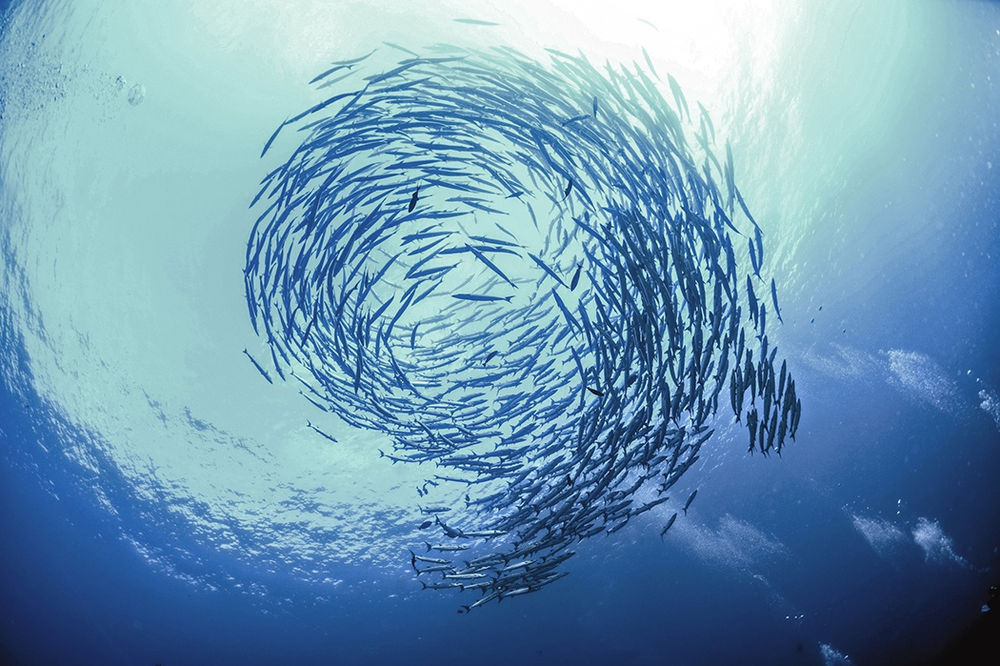

A bank of fish behaving in a systematic way by following a set of simple rules
</div></script></section><section  data-markdown><script type="text/template"><!-- .slide: class="drop" -->
<div class="" style="position: absolute; left: 0px; top: 0px; height: 1199px; width: 1920px; min-height: 1199px; display: flex; flex-direction: column; align-items: center; justify-content: center" absolute="true">

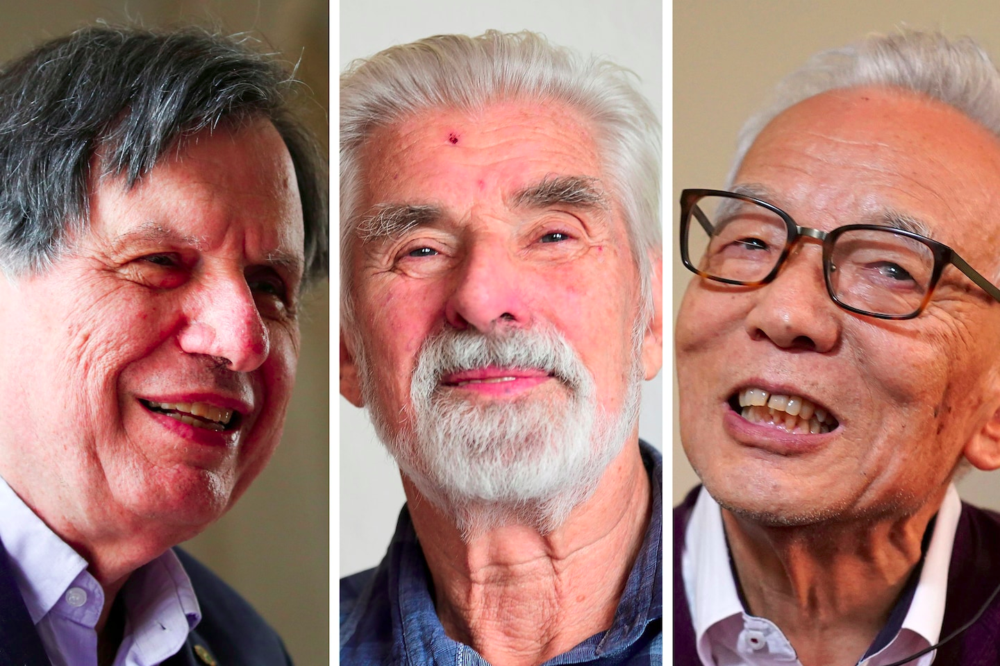

In 2021, [Syukuro Manabe](https://en.wikipedia.org/wiki/Syukuro_Manabe) and [Klaus Hasselmann](https://en.wikipedia.org/wiki/Klaus_Hasselmann) laid the foundation of our knowledge of the Earth’s climate and how humanity influences it. 
[Giorgio Parisi](https://en.wikipedia.org/wiki/Giorgio_Parisi) is rewarded for his revolutionary contributions to the theory of disordered and random phenomena.
</div></script></section><section  data-markdown><script type="text/template"><!-- .slide: class="has-dark-background drop" data-background-color="#304f5e" -->
<div class="" style="position: absolute; left: 0px; top: 0px; height: 1199px; width: 1920px; min-height: 1199px; display: flex; flex-direction: column; align-items: center; justify-content: center" absolute="true">

# 3. Cellular automata

<i class="fas fa-border-none fa-4x" ></i>
</div>

<aside class="notes"></aside></script></section><section  data-markdown><script type="text/template"><!-- .slide: class="drop" -->
<div class="" style="position: absolute; left: 0px; top: 0px; height: 1199px; width: 1920px; min-height: 1199px; display: flex; flex-direction: column; align-items: center; justify-content: center" absolute="true">

## Key figures

- [Stanislaw Ulam](https://en.wikipedia.org/wiki/Stanislaw_Ulam) and [John von Neumann](https://en.wikipedia.org/wiki/John_von_Neumann) ―1940s
- [John Conway](https://en.wikipedia.org/wiki/John_Horton_Conway) ―1970
- [Stephen Wolfram](https://en.wikipedia.org/wiki/Stephen_Wolfram "Stephen Wolfram") ―1980s

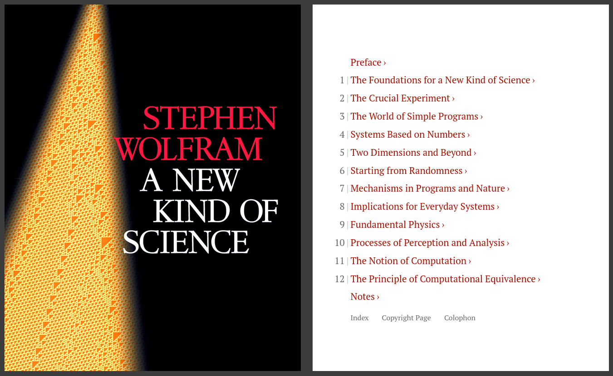
</div>

<aside class="notes"><p>Stanisław Marcin Ulam was a Polish mathematician, nuclear physicist and computer scientist. He participated in the Manhattan Project, originated the Teller–Ulam design of thermonuclear weapons, discovered the concept of the cellular automata.
John von Neumann was a Hungarian and American mathematician, physicist, computer scientist, engineer and polymath. He had perhaps the widest coverage of any mathematician of his time, polymath with many contributions.</p>
<p>Working together at los Alamos National Laboratory in the 1940s</p>
<p>John Horton Conway was an English mathematician active in the theory of finite groups, knot theory, number theory, combinatorial game theory and coding theory. He also made contributions to many branches of recreational mathematics, most notably the invention of the cellular automaton called the Game of Life.</p>
</aside></script></section><section  data-markdown><script type="text/template"><!-- .slide: class="drop" -->
<div class="" style="position: absolute; left: 0px; top: 0px; height: 1199px; width: 1920px; min-height: 1199px; display: flex; flex-direction: column; align-items: center; justify-content: center" absolute="true">

## Key concepts

- A system of cells
- Each cell has a state
- Each cell has a neighbourhood
</div>

<aside class="notes"><p>at its most basic</p>
</aside></script></section><section  data-markdown><script type="text/template"><!-- .slide: class="drop" -->
<div class="" style="position: absolute; left: 0px; top: 0px; height: 1199px; width: 1920px; min-height: 1199px; display: flex; flex-direction: column; align-items: center; justify-content: center" absolute="true">

## Example 1: Conway's Game of Life
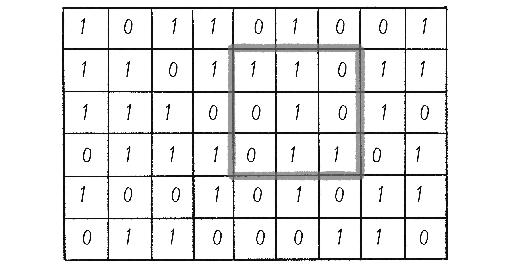

Images and implementation in p5.js by [Daniel Schiffman](https://tisch.nyu.edu/about/directory/itp/1984778605) | [Code on Github](https://github.com/sklise/conways-game-of-life)
</div></script></section><section  data-markdown><script type="text/template"><!-- .slide: class="drop" -->
<div class="" style="position: absolute; left: 0px; top: 0px; height: 1199px; width: 1920px; min-height: 1199px; display: flex; flex-direction: column; align-items: center; justify-content: center" absolute="true">

## Life and death processes (rules of the game):

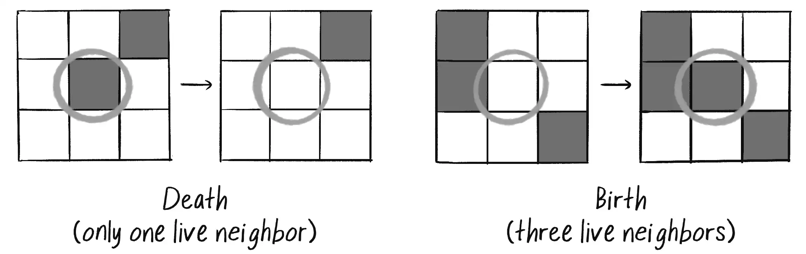
</div>

<aside class="notes"><ol>
<li><strong>Death:</strong> If a cell is alive (state = 1), it will die (state becomes 0) under the following circumstances:<ul>
<li><strong>Overpopulation:</strong> If the cell has four or more living neighbors, it dies.</li>
<li><strong>Loneliness:</strong> If the cell has one or fewer living neighbors, it dies.</li>
</ul>
</li>
<li><strong>Birth:</strong> If a cell is dead (state = 0), it will come to life (state becomes 1) when it has exactly three living neighbors (no more, no less).</li>
<li><strong>Stasis:</strong> In all other cases, the cell’s state doesn’t change. Two scenarios are possible:<ul>
<li><strong>Staying alive:</strong> If a cell is alive and has exactly two or three live neighbors, it stays alive.</li>
<li><strong>Staying dead:</strong> If a cell is dead and has anything other than three live neighbors, it stays dead.</li>
</ul>
</li>
</ol>
</aside></script></section><section  data-markdown><script type="text/template"><!-- .slide: class="drop" -->
<div class="" style="position: absolute; left: 0px; top: 0px; height: 1199px; width: 1920px; min-height: 1199px; display: flex; flex-direction: column; align-items: center; justify-content: center" absolute="true">

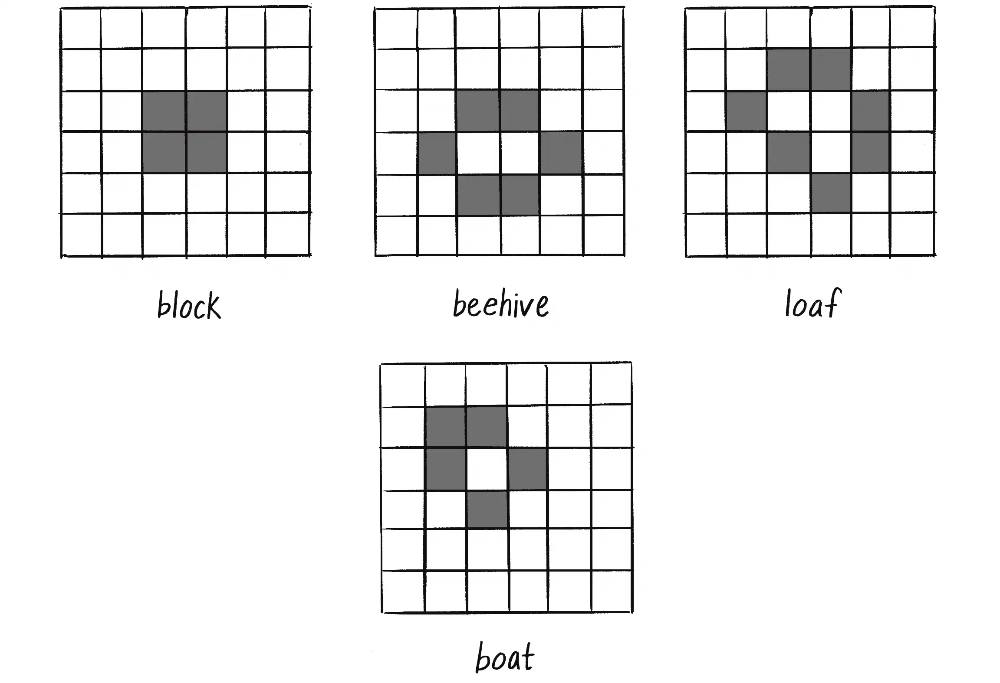

Initial patterns that never change
</div></script></section><section  data-markdown><script type="text/template"><!-- .slide: class="drop" -->
<div class="" style="position: absolute; left: 0px; top: 0px; height: 1199px; width: 1920px; min-height: 1199px; display: flex; flex-direction: column; align-items: center; justify-content: center" absolute="true">

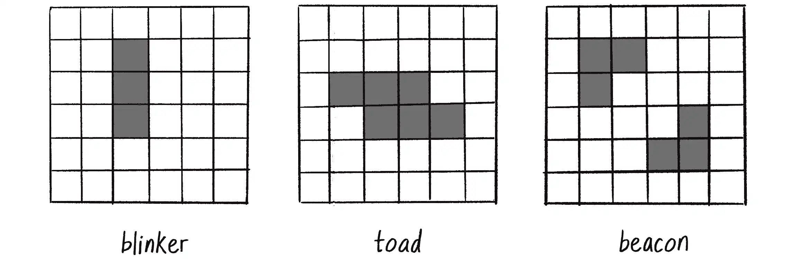

Initial patterns that oscillate between two states
</div></script></section><section  data-markdown><script type="text/template"><!-- .slide: class="drop" -->
<div class="" style="position: absolute; left: 0px; top: 0px; height: 1199px; width: 1920px; min-height: 1199px; display: flex; flex-direction: column; align-items: center; justify-content: center" absolute="true">

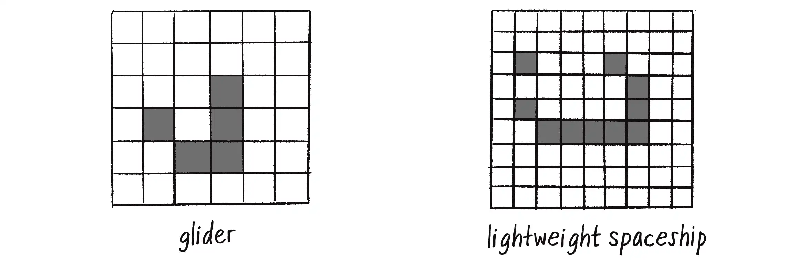

initial patterns that appear to move! [See it in action](https://sklise.github.io/conways-game-of-life/)
</div>

<aside class="notes"><p><a href="https://sklise.github.io/conways-game-of-life/">https://sklise.github.io/conways-game-of-life/</a></p>
</aside></script></section><section  data-markdown><script type="text/template"><!-- .slide: class="drop" -->
<div class="" style="position: absolute; left: 0px; top: 0px; height: 1199px; width: 1920px; min-height: 1199px; display: flex; flex-direction: column; align-items: center; justify-content: center" absolute="true">

## Example 2: Agent-based modelling with MESA

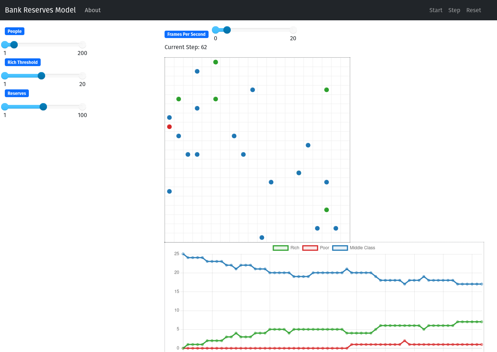

[MESA](https://github.com/projectmesa/mesa) is a Python library for agent-based modelling; a Python alternative to [NetLogo](https://ccl.northwestern.edu/netlogo/).
</div></script></section><section  data-markdown><script type="text/template"><!-- .slide: class="has-dark-background drop" data-background-color="#2b1804" -->
<div class="" style="position: absolute; left: 0px; top: 0px; height: 1199px; width: 1920px; min-height: 1199px; display: flex; flex-direction: column; align-items: center; justify-content: center" absolute="true">

# The road behind

<div class="callout callout-color2">
<div class="callout-title">
<div class="callout-icon">

<i class="fas fa-fire-alt" ></i>


</div>
<div class="callout-title-inner">

In summary:

</div>
</div>
<div class="callout-content">

- Modelling! From simple rules to complex systems

- Visualising complexity and uncertainty through simulation

- Tools and techniques: P5.js, MESA

</div>
</div>
</div></script></section><section  data-markdown><script type="text/template"><!-- .slide: class="has-dark-background drop" data-background-color="#304f5e" -->
<div class="" style="position: absolute; left: 0px; top: 0px; height: 1199px; width: 1920px; min-height: 1199px; display: flex; flex-direction: column; align-items: center; justify-content: center" absolute="true">

# 4. Questions?
<i class="far fa-question-circle fa-4x" ></i>
</div>

<aside class="notes"></aside></script></section><section  data-markdown><script type="text/template"><!-- .slide: class="drop" -->
<div class="" style="position: absolute; left: 0px; top: 0px; height: 1199px; width: 1920px; min-height: 1199px; display: flex; flex-direction: column; align-items: center; justify-content: center" absolute="true">

# 5. Looking back and looking forward

<i class="fas fa-tasks fa-4x" ></i>
</div>

<aside class="notes"></aside></script></section><section  data-markdown><script type="text/template"><!-- .slide: class="drop" -->
<div class="" style="position: absolute; left: 0px; top: 0px; height: 1199px; width: 1920px; min-height: 1199px; display: flex; flex-direction: column; align-items: center; justify-content: center" absolute="true">

1. Introduction to visual representation
2. Visual perception and emotion
3. Visual layouts
4. Layering and compositing
5. Reduction and summarisation
6. Data acquisition and pre-processing
7. Basic visualisation using RAW Graphs
8. Advanced visualisation using D3
9. Visual storytelling
10. Simulation and visualisation using P5.js and MESA
</div>

<aside class="notes"><p>do your surveys!</p>
</aside></script></section><section  data-markdown><script type="text/template"><!-- .slide: class="drop" -->
<div class="" style="position: absolute; left: 0px; top: 0px; height: 1199px; width: 1920px; min-height: 1199px; display: flex; flex-direction: column; align-items: center; justify-content: center" absolute="true">

# Thank you!
</div></script></section></div>
    </div>

    <script src="dist/reveal.js"></script>

    <script src="plugin/markdown/markdown.js"></script>
    <script src="plugin/highlight/highlight.js"></script>
    <script src="plugin/zoom/zoom.js"></script>
    <script src="plugin/notes/notes.js"></script>
    <script src="plugin/math/math.js"></script>
	<script src="plugin/mermaid/mermaid.js"></script>
	<script src="plugin/chart/chart.min.js"></script>
	<script src="plugin/chart/plugin.js"></script>
	<script src="plugin/menu/menu.js"></script>
	<script src="plugin/customcontrols/plugin.js"></script>
	<script src="plugin/chalkboard/plugin.js"></script>
	<script src="plugin/reveal-pointer/pointer.js"></script>
	<script src="plugin/elapsed-time-bar/elapsed-time-bar.js"></script>

    <script>
      function extend() {
        var target = {};
        for (var i = 0; i < arguments.length; i++) {
          var source = arguments[i];
          for (var key in source) {
            if (source.hasOwnProperty(key)) {
              target[key] = source[key];
            }
          }
        }
        return target;
      }

	  function isLight(color) {
		let hex = color.replace('#', '');

		// convert #fff => #ffffff
		if(hex.length == 3){
			hex = `${hex[0]}${hex[0]}${hex[1]}${hex[1]}${hex[2]}${hex[2]}`;
		}

		const c_r = parseInt(hex.substr(0, 2), 16);
		const c_g = parseInt(hex.substr(2, 2), 16);
		const c_b = parseInt(hex.substr(4, 2), 16);
		const brightness = ((c_r * 299) + (c_g * 587) + (c_b * 114)) / 1000;
		return brightness > 155;
	}

	var bgColor = getComputedStyle(document.documentElement).getPropertyValue('--r-background-color').trim();
	var isLight = isLight(bgColor);

	if(isLight){
		document.body.classList.add('has-light-background');
	} else {
		document.body.classList.add('has-dark-background');
	}

      // default options to init reveal.js
      var defaultOptions = {
        controls: true,
        progress: true,
        history: true,
        center: true,
        transition: 'default', // none/fade/slide/convex/concave/zoom
        plugins: [
          RevealMarkdown,
          RevealHighlight,
          RevealZoom,
          RevealNotes,
          RevealMath.MathJax3,
		  RevealMermaid,
		  RevealChart,
		  RevealCustomControls,
		  RevealMenu,
	      RevealPointer,
		  RevealChalkboard, 
		  ElapsedTimeBar
        ],


    	allottedTime: 120 * 1000,

		mathjax3: {
			mathjax: 'plugin/math/mathjax/tex-mml-chtml.js',
		},
		markdown: {
		  gfm: true,
		  mangle: true,
		  pedantic: false,
		  smartLists: false,
		  smartypants: false,
		},

		mermaid: {
			theme: isLight ? 'default' : 'dark',
		},

		customcontrols: {
			controls: [
				{id: 'toggle-overview',
				title: 'Toggle overview (O)',
				icon: '<i class="fa fa-th"></i>',
				action: 'Reveal.toggleOverview();'
				},
				{ icon: '<i class="fa fa-pen-square"></i>',
				title: 'Toggle chalkboard (B)',
				action: 'RevealChalkboard.toggleChalkboard();'
				},
				{ icon: '<i class="fa fa-pen"></i>',
				title: 'Toggle notes canvas (C)',
				action: 'RevealChalkboard.toggleNotesCanvas();'
				},
			]
		},
		menu: {
			loadIcons: false
		}
      };

      // options from URL query string
      var queryOptions = Reveal().getQueryHash() || {};

      var options = extend(defaultOptions, {"width":1920,"height":1199,"margin":0,"controls":true,"progress":true,"slideNumber":true,"transition":"slide","transitionSpeed":"default"}, queryOptions);
    </script>

    <script>
      Reveal.initialize(options);
    </script>
  </body>

  <!-- created with Advanced Slides -->
</html>
